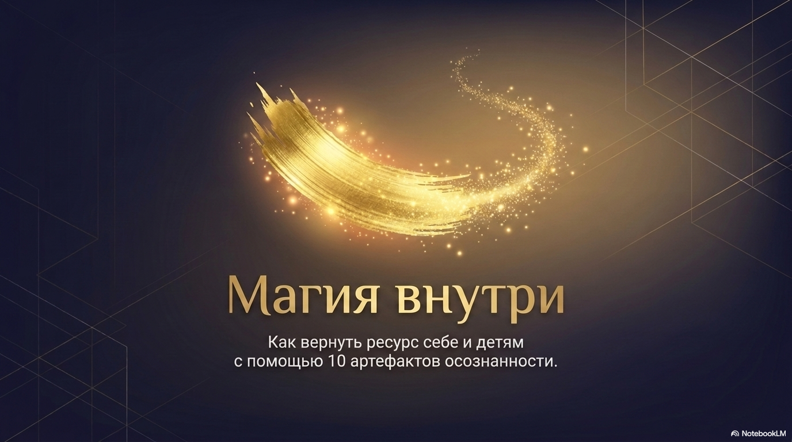
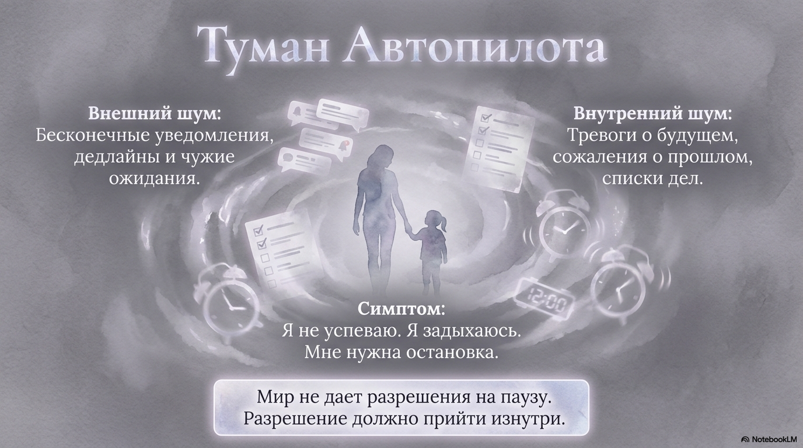
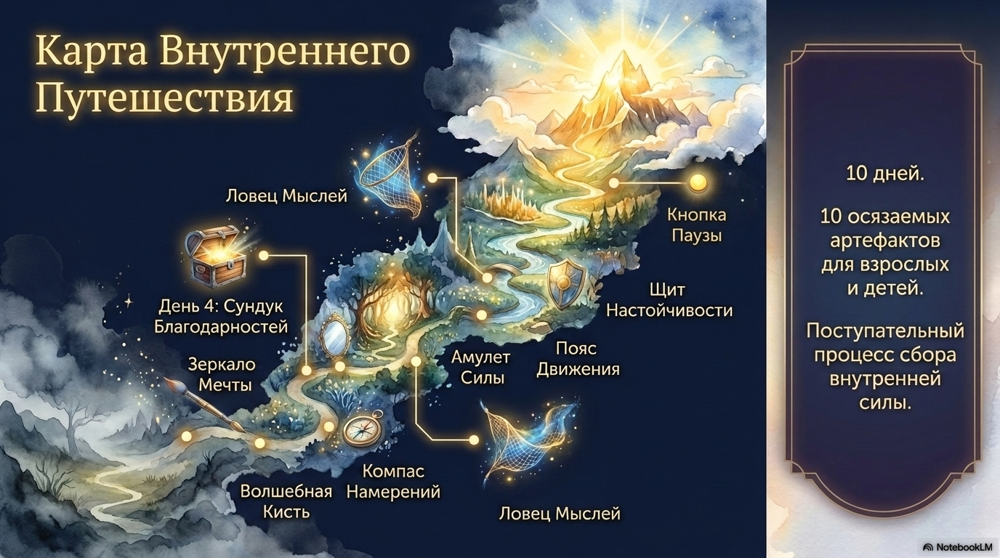
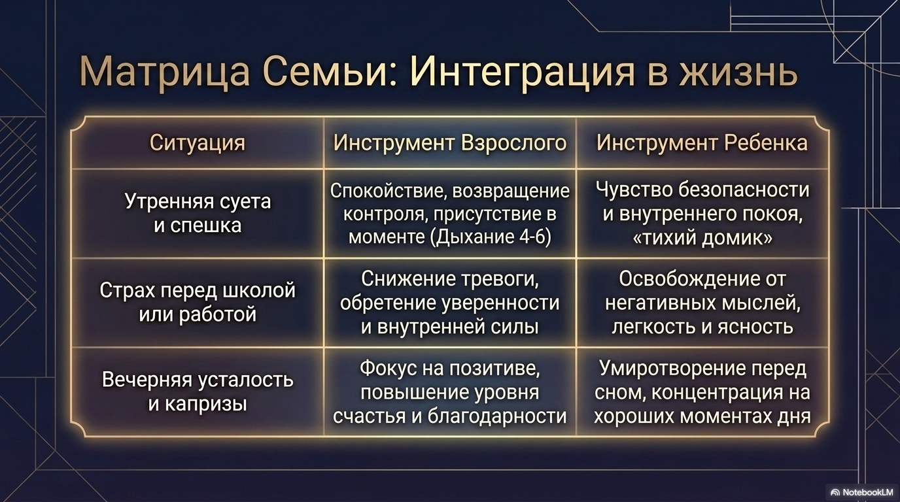
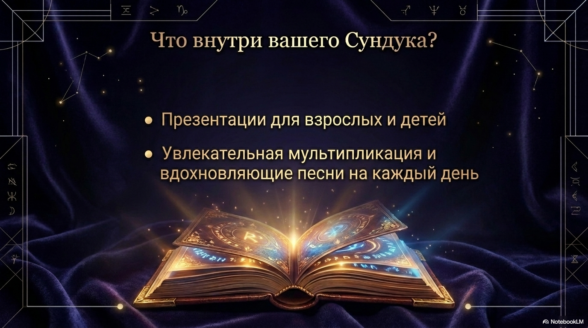
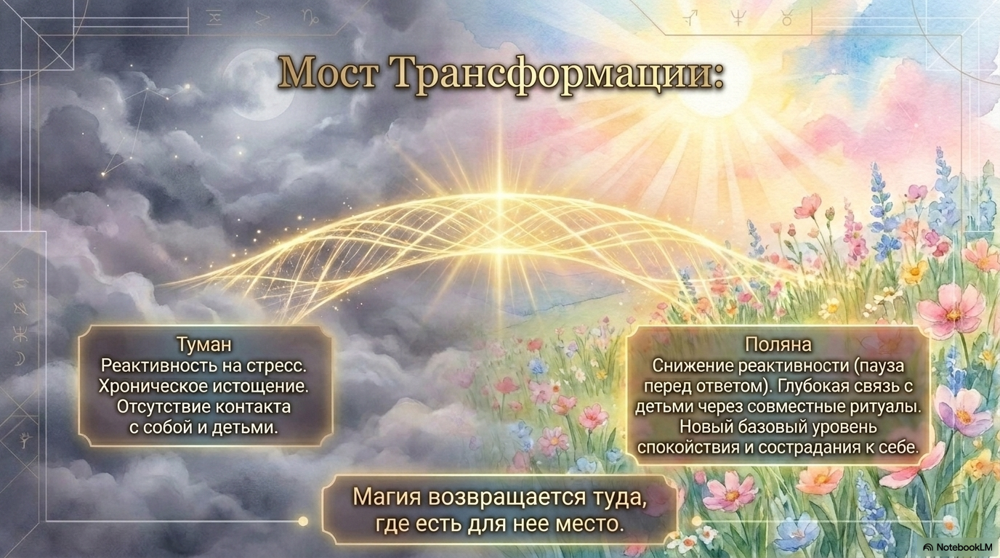
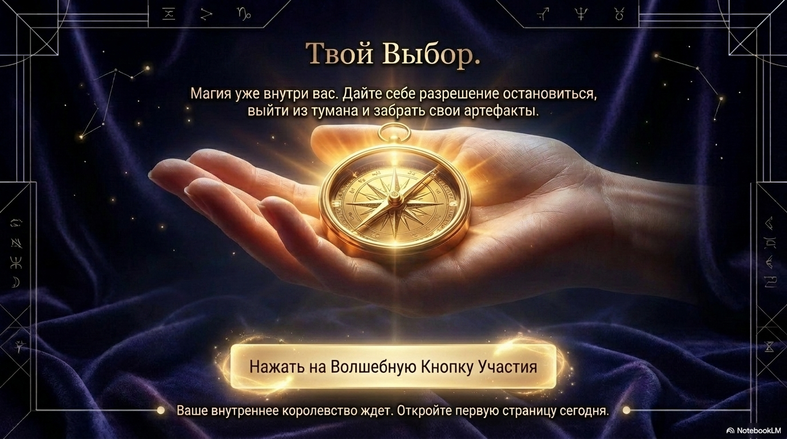

Для взрослого
Возвращение контроля, снижение тревоги, фокус на хорошем, опора на тело и дыхание.

10 дней. 10 артефактов. Один путь к спокойствию.
Курс для родителей и детей, который помогает выйти из тумана автопилота, вернуть внутренний ресурс и научиться останавливаться до того, как силы заканчиваются.
Когда день идет на автопилоте
Уведомления, дедлайны, чужие ожидания, тревоги о будущем и списки дел незаметно создают ощущение: «я не успеваю, я задыхаюсь, мне нужна остановка».
Мир редко дает разрешение на паузу. В этом курсе оно появляется изнутри: через простые ежедневные практики, понятные взрослым и детям.

Подход курса
«Магия внутри» соединяет сказочную форму и практичные инструменты: ребенку легче включиться через образы, а взрослому проще встроить практики в реальную жизнь. Так пауза, благодарность, намерение и движение становятся семейными ритуалами, а не еще одним пунктом в списке дел.
Возвращение контроля, снижение тревоги, фокус на хорошем, опора на тело и дыхание.
Чувство безопасности, ясность перед школой, умиротворение перед сном.
Общий язык спокойствия, который помогает проживать утро, работу, учебу и вечер мягче.
Для кого этот курс
«Магия внутри» создана для современных взрослых, которым уже мало просто понимать себя головой. Здесь вы получаете практики, которые можно проживать вместе с детьми и сразу переносить в обычный день.
Если вы устали от детских истерик, собственных срывов и чувства вины после крика.
Если книги и курсы дают понимание, но радость, легкость и устойчивость все еще ускользают.
Если вы много отдаете клиентам и хотите инструменты, которые помогут не выгорать самим.
Если хочется снова радоваться как в детстве и проживать день не на автопилоте.
Почему это работает
Для детей это легкие, быстрые и увлекательные практики через сказку, образы, движение и приключение девочки Элли. Ребенок не «занимается медитацией» в скучном взрослом смысле, а играет, проживает историю и незаметно учится управлять состоянием.
Для взрослых это серьезное погружение внутрь себя: глубокие объяснения на уровне смыслов, работа с вниманием, дыханием, телом, мыслями и выбором реакции. Так практика становится не разовым упражнением, а внутренним навыком гармонии, радости и устойчивости.
Простая практика, которая создает пространство между раздражителем и реакцией.
Сказочный формат помогает ребенку включаться без сопротивления и с интересом.
Практика раскрывает смыслы, возвращает контакт с собой и укрепляет эмоциональную опору.
Авторитетность методики
На протяжении веков мудрецы уделяли внимание не только внешним делам, статусу и достижениям, но и внутреннему состоянию. Они тренировали способность наблюдать мысли, успокаивать дыхание, возвращаться в присутствие и выбирать качество своего дня.
Курс переводит эту древнюю практическую мудрость на язык современной семьи: больше гармонии, счастья, радости, восторга и высокого эмоционального состояния не когда-нибудь потом, а в каждом обычном дне.

Маршрут
Каждый день открывает новый артефакт: от Волшебной Кисти и Компаса Намерений до Кнопки Паузы, Щита Настойчивости и Сундука Благодарностей.
Ваш арсенал нейроалхимика
Помогает заметить, что день можно раскрасить своим выбором, а не только обстоятельствами.
Возвращает контакт с желаниями и с тем состоянием, в котором хочется жить.
Учит выбирать направление дня и действовать не из суеты, а из внутренней опоры.
Переносит внимание на то, что уже есть, и тренирует базовый уровень счастья.
Через тело помогает стряхнуть усталость, напряжение и застрявшие эмоции.
Задает главный вопрос: «Эта мысль мне служит?» - и помогает отпускать лишнее.
Помогает успокоить страх, вспомнить о внутренней устойчивости и действовать мягче.
Поддерживает, когда страшно ошибиться, хочется бросить или не хватает веры в себя.
Учит замечать хорошее, создавать маленькую радость и возвращать светлое состояние.
Возвращает свободу выбора реакции в момент раздражения, усталости или тревоги.
Интеграция в жизнь
Взрослый возвращает спокойствие через дыхание, ребенок получает чувство безопасности.
Тревога снижается, появляется уверенность, мысли становятся легче и яснее.
Фокус переносится на хорошие моменты дня, перед сном становится тише внутри.

Результаты через 30 дней
Вы быстрее возвращаетесь в спокойствие и не отдаете весь день одной эмоции.
У семьи появляется общий тайный язык: «нажать на паузу», «поймать мысль», «достать щит».
Вы учитесь быть счастливее здесь и сейчас, а не только после больших достижений.
В доме становится больше легкости, восторга, тепла и ощущения, что день можно выбирать.
Когда тревоги меньше, появляется больше энергии для внимания, творчества и смелых решений.
Артефакты становятся понятными семейными инструментами, к которым можно возвращаться снова.
Внутри курса
В курсе есть презентации для взрослых и детей, увлекательная мультипликация и вдохновляющие песни на каждый день. Формат помогает не объяснять осознанность сухими словами, а проживать ее через образ, звук и действие.


Мост трансформации
Практики курса не отменяют реальность. Они помогают переписать базовый уровень спокойствия: заметить паузу, выбрать реакцию и найти ресурс даже в плотном дне.
Твой выбор
Магия уже внутри вас. Начните 10-дневное путешествие, чтобы забрать свои артефакты и открыть первую страницу спокойствия сегодня.
Записаться на курс
Спецпредложение
Пока счетчик тикает, участие в 10-дневном семейном квесте «Магия внутри» стоит 9 990 руб. После окончания акции стоимость может измениться.